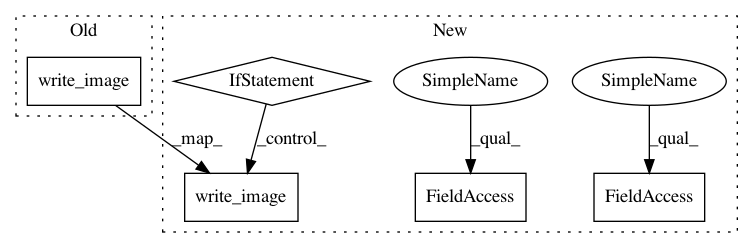

b7b5cbc9d4b44b360dedbddb83db32ff3ca9f6f4,tests/utils_tests/image_tests/test_read_image.py,TestReadImageDifferentBackends,setUp,#TestReadImageDifferentBackends#,75
Before Change
else:
self.img = np.random.randint(
0, 255, size=(1,) + self.size, dtype=np.uint8)
write_image(self.img, self.path)
@unittest.skipUnless(_cv2_available, "cv2 is not installed")
def test_read_image_different_backends_as_color(self):
chainer.config.cv_read_image_backend = "cv2"
After Change
suffix="." + self.suffix, delete=False)
self.path = self.file.name
if self.alpha is None:
if self.color:
self.img = np.random.randint(
0, 255, size=(3,) + self.size, dtype=np.uint8)
else:
self.img = np.random.randint(
0, 255, size=(1,) + self.size, dtype=np.uint8)
write_image(self.img, self.path)
else:
self.img = np.random.randint(
0, 255, size=(4,) + self.size, dtype=np.uint8)
_write_rgba_image(self.img, self.path)
@unittest.skipUnless(_cv2_available, "cv2 is not installed")
def test_read_image_different_backends_as_color(self):
chainer.config.cv_read_image_backend = "cv2"
cv2_img = read_image(self.path, dtype=self.dtype, color=self.color, alpha=self.alpha)
In pattern: SUPERPATTERN
Frequency: 3
Non-data size: 5
Instances
Project Name: chainer/chainercv
Commit Name: b7b5cbc9d4b44b360dedbddb83db32ff3ca9f6f4
Time: 2019-02-02
Author: yuyuniitani@gmail.com
File Name: tests/utils_tests/image_tests/test_read_image.py
Class Name: TestReadImageDifferentBackends
Method Name: setUp
Project Name: chainer/chainercv
Commit Name: 9e608febee0219236d67e905874a27cba72e9c55
Time: 2019-03-07
Author: Hakuyume@users.noreply.github.com
File Name: tests/utils_tests/image_tests/test_write_image.py
Class Name: TestWriteImage
Method Name: test_write_image
Project Name: chainer/chainercv
Commit Name: b7b5cbc9d4b44b360dedbddb83db32ff3ca9f6f4
Time: 2019-02-02
Author: yuyuniitani@gmail.com
File Name: tests/utils_tests/image_tests/test_read_image.py
Class Name: TestReadImage
Method Name: setUp